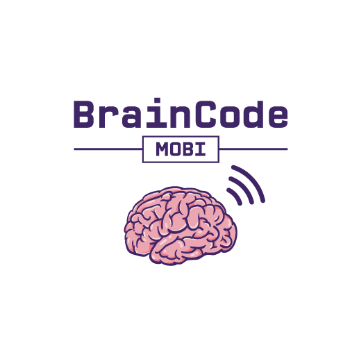
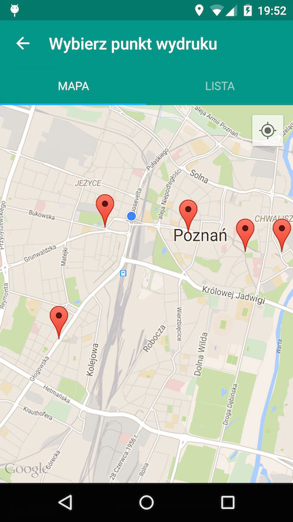
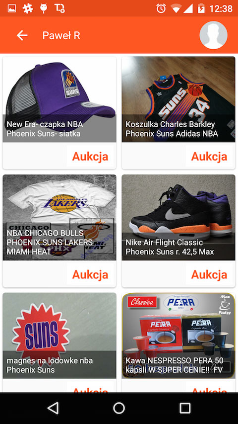
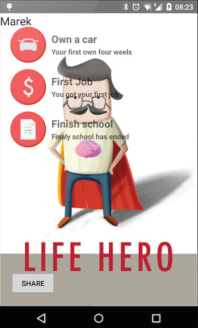
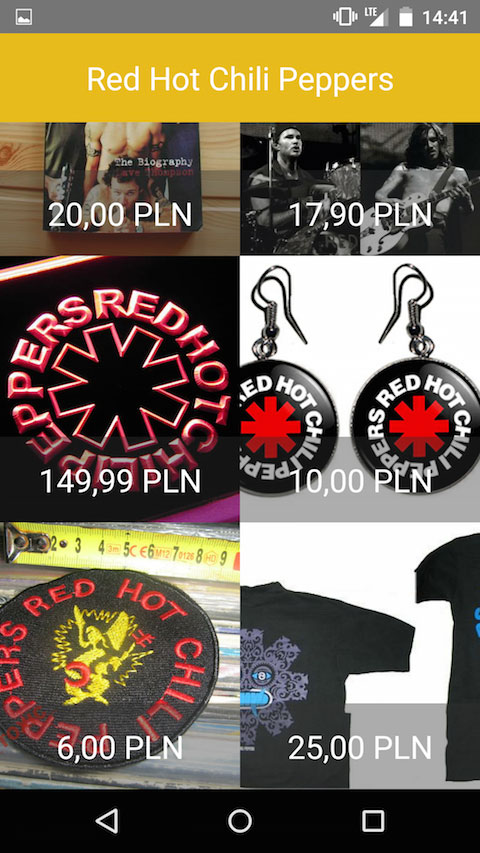
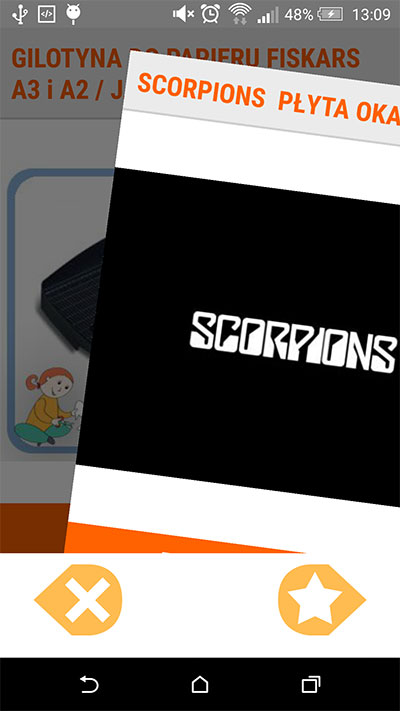
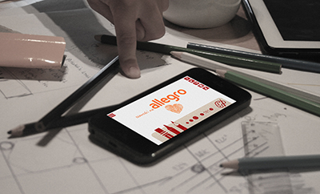
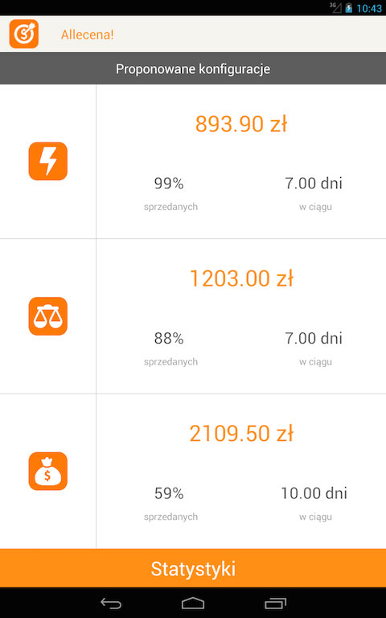

24h HACKATHON MOBILNY
13-14 marca 2015
W piątek 13 marca 2015r. wystartuje druga edycja hackathonu BrainCode Mobi przygotowana przez Grupę Allegro przy współpracy z najlepszymi uczelniami w Polsce. Ta edycja będzie wyjątkowa, ponieważ odbywać się będzie jednocześnie w czterech miastach: Krakowie, Poznaniu, Toruniu, oraz Warszawie.
Już za miesiąc sprawdzimy czy w 24 godziny maksymalnie czteroosobowe zespoły są w stanie zbudować ciekawą i innowacyjną aplikację mobilną.
Spotykamy się w piątek, 13 marca o godzinie 16:00. Po rejestracji uczestników i krótkim wprowadzeniu rozpoczniemy kodowanie, które zakończy się w sobotę o godzinie 17:00. Jury rozpocznie wówczas ocenę projektów. Imprezę zakończymy podsumowaniem oraz nagrodzeniem najlepszych pomysłów.


Uczestnicy zmierzą się w dwóch kategoriach:
Uczestnicy będą pracować w maksymalnie 4-osobowych zespołach, które uformują się na miejscu wydarzenia po prezentacji pomysłów uczestników.
Na drugą edycję BrainCode Mobi zapraszamy wszystkich zainteresowanych tworzeniem aplikacji mobilnych: zarówno studentów rozpoczynających swoją przygodę z technologiami mobilnymi, jak i osoby, które na co dzień, zawodowo czy hobbystycznie, zajmują się podobnymi zagadnieniami: developerów, testerów i projektantów UX.


Poza samym konkursem w piątek równolegle planujemy otwarte warsztaty. Będzie można zapoznać się z zaawansowanymi zagadnieniami dotyczącymi tworzenia aplikacji dla wybranych platform mobilnych oraz poznać inne ciekawe technologie.
Na miejscu będzie można spotkać specjalistów od technologii mobilnych i backendowych z Grupy Allegro, koderów na wszystkie platformy mobilne, speców z branży, koleżanki i kolegów po fachu. Dla uczestników przewidzieliśmy w trakcie trwania imprezy gry oraz krótkie konkursy.
Na zespoły, które wykonają oraz zaprezentują najlepsze rozwiązania czekają atrakcyjne nagrody.
Udział w imprezie jest darmowy, a zapisy potrwają do 6 marca lub do wyczerpania limitu miejsc przypadających na lokalizację.
WAŻNE: Wszystkim, którzy zapiszą się do 26 lutego włącznie gwarantujemy koszulki w wybranych rozmiarach!
Dołącz do nas w Poznaniu, Krakowie, Toruniu i Warszawie!
Zapraszamy do obejrzenia galerii zdjęć oraz krótkiego filmu podsumowującego wydarzenie.

Programista z różnorodnym doświadczeniem. Zajmował się zawodowo programowaniem w PHP, Perl, Ansi C, C++, Java, oraz Objective-C. Szczególne zainteresowania to Lex, Yacc i AWK, oraz przetwarzanie tekstu i obrazów.

Programista iOS, w Grupie Allegro od roku. Eksperymentował także z BlackBerry10. Lubi minimalistyczny design, rowery i trollowanie.

Tester oprogramowania z blisko dwu letnim doświadczeniem. Swoją pasję do jakości oraz doświadczenia jako zwykły użytkownik Internetu przenosi na codzienną pracę wymagając dbałości o szczegóły od siebie i innych . Po pracy student Informatyki oraz członek Akademickiego Koła Aplikacji Internetowych AKAI. Fan HTC, dobrego jedzenia oraz swojej koszatniczki.

Tester oprogramowania z ponad 3 letnim doświadczeniem w Grupie Allegro. Wytrwale szuka błędów, zauważa najdrobniejsze detale, automatyzuje co się da. W wolnym czasie lubi biegać.

Artur Stępniewski jest deweloperem aplikacji Androidowych w Grupie Allegro Sp. z o.o. Wcześniej związany z koreańskimi gigantami branży elektronicznej. Pasjonuje się sportami motorowymi oraz snookerem.

Bartłomiej Kwiatkowski ma ponad trzyletnie doświadczenie w programowaniu na platformę Android. Obecnie pracuje w Snowdog.co gdzie był do tej pory odpowiedzialny m.in. za takie aplikacje jak Sportovia czy Meet Magento. Wcześniej samodzielnie pracował nad aplikacjami turystycznymi i lifestyle'owymi (Szlaki w górach, 27 grudnia i Trail Offroad) w firmie Trail.pl. W 2012 roku ukończył Informatykę na Politechnice Poznańskiej, specjalizacja Sieci komputerowe i systemy rozproszone. Podczas studiów brał udział przez 3 lata w projekcie IT-SOA oraz odbył kilka interesujących praktyk i staży. W wolnym czasie tworzy własne aplikacje, lubi gotować i uprawia boks.


Nadworny wymiatacz platformy Windows Phone od zarania dziejów jej istnienia. W wolnym czasie wyłącza komputer.

Programista i miłośnik aplikacji mobilnych na platformę Android. Entuzjasta idei i klimatu hackatonów. Bezkompromisową dbałość o wysoką jakość i przejrzystość kodu równoważy poczuciem humoru.

Webdeveloper, zwolenniczka Angulara i RWD, od prawie dwóch lat dba o frontend serwisów Grupy Allegro. Po pracy uwalnia endorfiny na treningach zumby.

Zrażony do pisania aplikacji mobilnych w Javie lecz coś tam potrafi. Ewangelista Ruby. Na co dzień lider zespołu programistów w Grupie Allegro. Kocha sport, muzykę i uwielbia ludzi z pasjami wszelkiej maści.

W Grupie Allegro testuje aplikacje mobilne i rozwija kompetencje programistyczne. Po pracy fika oberki i gra w Peak.

Początkujący programista Java EE. Uważa front-end za zło konieczne. Bardziej od programowania interesują go tylko narzędzia, które ułatwiają pracę nad kodem. Prywatnie lubi pływać, jeździć na nartach i słuchać dobrej muzyki.

Programista z wieloletnim doświadczeniem. Związany z Grupą Allegro od 3 lat. Aktualnie odpowiedzialny za zabezpieczenia antyfraudowe na platformie Allegro.

Programista androida z rocznym doświadczeniem. Na drugim miejscu w liście zainteresowań web development. W wolnym czasie energię rozładowuje biegając.

1994-1998 studia na AGH, kierunek Elektronika i Telekomunikacja. Laureat stypendium FPT. 1997-1998 ComArch Systemy Sieciowe i ComArch S.A. 1998-1999 Comprex. 1998-2005 asystent w Katedrze Telekomunikacji AGH. 2005-2010 wykładowca w KT AGH. 2006-2009 programista dla Collegium Medicum i Centrum Innowacji, Transferu Technologii i Rozwoju Uniwersytetu Jagiellońskiego. 2010 tytuł doktora nauk technicznych na AGH. Od 2011 adiunkt w KT AGH. Udział w licznych projektach badawczo-naukowych, zarówno finansowanych przez UE (Daidalos, Daidalos2, Content, Enext, Desyme, ACTS BBL “Broadband Loop”, ProAccess, Healthware, mPower, INDECT, Insigma i inne), jak i krajowych. Badania dla przemysłu. Autor ok. 50 publikacji z zakresu telekomunikacji przewodowej, bezprzewodowej, satelitarnej, teleinformatyki i telemedycyny.

Programista iOS z pasji i powołania. Po godzinach pracy wspiera firmową drużynę siatkówki. Przez wiele lat działał w Studenckim Radio17, gdzie prowadził audycje jazzowe, w wolnych chwilach fotografuje.

Tworzy aplikację na system Android od czasu, gdy kupił na Allegro HTC G1 ponad 5 lat temu. W wolnym czasie gra w planszówki.

Jarosław Bułat jest doświadczonym programistą projektującym złożone systemy do cyfrowego przetwarzania danych. Doktorat uzyskał w dziedzinie Telekomunikacja w 2006 roku. Obecnie pracuje na stanowisku Adiunkta w Katedrze Telekomunikacji AGH. Pasjonuje się systemami przetwarzania obrazu, dźwięku i innych wielowymiarowych sygnałów. Najbardziej złożone systemy zaprojektował używając narzędzi: C/C++, Matlab, Linux, Android (NDK/SDK), OpenCV, MPI-MPICH, Qt, w tym system BRONCHOVID służący do akwizycji, analizy i wspomagania diagnozowania medycznego, w ramach projektu SARACEN współtworzył odtwarzacz 3D strumieniujący sygnał wideo za pomocą sieci Torrent, w projekcie TAPAS zaprojektował system do wykrywania przeszkód dedykowany dla osoby niewidomej oparty na stereowizji zrealizowanej wyłącznie programowo na smartfonie z systemem Android. Jarosław Bułat projektuje również systemy wbudowane, urządzenia pomiarowe, automatykę domową oraz fascynują go tematy związane z rozwojem techniki, jej wpływu na ludzi zwłaszcza w obrębie nurtu transhumanizmu. Uważa, że inżynier powinien optymalizować wszelkie procesy na które ma wpływ :)

Łącze pracę programistów z QA i wychodzi z tego niezły kawałek softu. Hobby - kolarstwo szosowe, pentesting, wkurzanie devów. Człowiek Endpoint.

Specjalista ds eventów w Grupie Allegro. Razem z Pauliną Mazurek tworzy zespół Promo IT czyli dział zajmujący się promowaniem technologii, wzmacnianiem wizerunku Allegro jako firmy technologicznej pod szyldem Allegro.tech oraz organizowaniem wydarzeń dla środowiska IT. Prywatnie, niespokojny duch, nieustannie w podróży.

Programistka z paroletnim doświadczeniem. Specjalizująca się w pisaniu aplikacji na telefony androidowe. Lubi słuchać muzyki.

Programista iOS od ponad 4 lat, jego pasją jest upsprawnianie procesu developmentu i jego automatyzacja (continuous integration, continuous deployment, code analysis).

Tester oprogramowania z 8 letnim doświadczeniem (6 lat w Grupie Allegro). Zajmuję się testami oraz automatyzacją testów UI aplikacji mobilnej na Androida.

Programista Scala/Java z ponad 5 letnim doświadczeniem. W Allegro zajmujący się szeroko rozumianym BigData, prywatnie interesuje się rozwiązywaniem zadań na TopCoder oraz appkami mobilnymi.

CEO Softnauts. Doświadczony przedsiębiorca i programista. Założyciel firmy Softnauts działającej z sukcesem na międzynarodowym rynku produkcji gier i aplikacji mobilnych oraz rozwiązań SaaS. Entuzjasta idei Internet of Things.

Tester oprogramowania z ponad 3 letnim doświadczeniem. Interesuję się między innymi tematyką automatyzacji testów, aktualnie na platformę iOS.

Programista Android od czasów Google G1. Dba o CleanCode i testowalność rozwiązań. Stara się nadążać za nowościami w platformie i znaleźć dla nich praktyczne zastosowanie.

UX. Sfokusowany na mobilnych apkach. Wtrącający się w tematy biznesowe ogarniacz chaosu. Uwielbia zadawać pytania: "dlaczego?" i "po co?". Cechy szczególnie rozwijane: empatia i inteligencja emocjonalna.

Programista fullstackowy, z pasją do skalowalnych architektur. Służbowo rozwija core'owe funkcjonalności allegro od paru lat. Prywatnie realizuje swoją pasję tworząc gry na urządzenia mobilne wraz ze swoim jedenastoletnim synem.

Developer, architekt i product owner w Grupie Allegro. Entuzjasta nowych technologii i rozbijania monolitów na małe aplikacje.

Ekspert w obszarze przetwarzania informacji nieprecyzyjnej w systemach decyzyjnych, widzeniu komputerowym i modelowaniu języka naturalnego. Koordynator zespołu recenzyjnego programu US-Poland Innovation Hub. Absolwent prestiżowego programu MNiSW: Top 500 Innovators – Science-Management - Commercialization. Laureat nagrody IBM Faculty Award.


Programista z doświadczeniem Javowym. Od małych urządzeń do większych i całkiem dużych.. Ostatnio jakiś czas w androidzie. Zainteresowany automatyzacją i szeroko pojętym Continuous Integration. Po godzinach wychowuje córke.

Krzysztof jest współzałożycielem Pixle, twórców wielokrotnie nagradzanego Foldify, aktualnie pracuje w Mashable. Poprzednio kierował zespołem 10+ programistów w Londynie kierując produkcją takich aplikacji jak Sun+ Goals, The Times. Programista pasjonat, pracował nad szerokim zakresem aplikacji, od typowo biznesowych po gry. Więcej informacji można znaleźć na merowing.info/about

Dyrektor hub:raum Kraków - Centrum Innowacyjności Deutsche Telekom dla startupów z regionu Europy Środkowo-Wschodniej. Wcześniej pełnił funkcję Kierownika Działu Innowacyjności w T-Mobile. Od początku swojej kariery zawodowej był odpowiedzialny za wdrażanie nowych technologii oraz rozwój produktów. Ze środowiskiem startupów związany od kilku lat. Był mentorem BIC Summer Start czy GammaRebels oraz członkiem jury m.in. podczas Bitspiration i Startup Weekend Warsaw. Prywatnie jest fanem lotnictwa i biegania.

Od 3 lat Android Developer w Grupie Allegro. Pasjonat nowych technologii, akrobatyki i filmowych efektów specjalnych.

iOS Developer w Grupie Allegro. Założyciel i współorganizator Swift Warsaw. Gdy nie koduje prawdopodobnie robi ludziom zdjęcia.

Head of Smart Space - inkubatora dla startupów technologicznych, będącego częścią Exea Data Center. Zaangażowany w rozbudowę i rozwoju działalności Toruńskiego Parku Technologicznego oraz utworzenie Exea Data Center. Od 2009 roku zawodowo związany z Toruńską Agencją Rozwoju Regionalnego S.A. pracując na Samodzielnym stanowisku ds. wsparcia Zarządu. Animator toruńskiej sceny startupowej.

Młody, zdolny, niekoniecznie poważny developer iOS ;)

Od 3 lat iOS Developer w Grupie Allegro. W wolnym czasie podróżuje. Lubi dżem.

Entuzjasta nowych technologii, dwukrotny finalista ogólnoświatowego konkursu technologicznego dla studentów Microsoft Imagine Cup z 2011r. (Nowy Jork) i 2012r.(Sydney). W Allegro odpowiada za rozwój aplikacji mobile na platformie Windows Phone.

Deweloper tworzący usługi REST wykorzystywane przez aplikacje mobilne. Wykłada na UAM przedmiot "Implementacja restowego API". Chętnie pomoże skonsumować API Allegro.

Miłośniczka wszystkiego, co wygodne. Zajmuję się marketingiem, w którym główną rolę gra technologia. Oczywiście taka, która ułatwia i rozwiązuje codzienne sprawy!

Architekt, innowator, zawadiaka. Kiedy nie rozmyśla o HA, failure isolation, skalowalności, programowaniu reaktywnym i systemach web-scale lubi podróżować po Azji.

Działa w świecie backend'owym w technologiach java i nodejs z nastawieniem na dostarczanie usług dla klientów mobilnych. W Allegro odpowiedzialny za REST API Allegro.

W Grupie Allegro odpowiedzialny za rozwój aplikacji Allegro na system Android. Majac do wyboru kodzenie czy kobiety - zawsze wybieram namiętną randkę z SDK. Jak już mnie oderwą od kodu - to stepuję po stepach Kaukazu, szosuję na nartach i szukam żony.

Lubi Apple, Instagrama i Snapchata. W pracy programuje w Objective-C, po pracy śpi.

Architekt oprogramowania mobilnego, programista iOS od 5 lat. W wolnych chwilach namiętny kibic sportowy oraz miłośnik matematyki rekreacyjnej, łamigłówek i wszelkich wyzwań intelektualnych.

Od 7 lat związany z Grupą Allegro. Ten mile spędzany czas pozwolił mi wejść w buty Programisty PHP i Java, Product Ownera oraz Scrum Mastera. Aktualnie lider zespołu, po godzinach próbuję swoich sił na platformie Android.

Projektant UX z 4-letnim doświadczeniem zdobytym zarówno w agencjach interaktywnych jak i w e-commerce. Rozmiar ekranu nie ma znaczenia, ważne by było łatwo, przyjemnie i ładnie.

Programista Java. Od blisko 4 lat związany z Grupą Allegro, gdzie pracuje głównie po stronie backendu, choć lubi też czasem popracować nad frontendem aplikacji. Prywatnie użytkownik urządzeń z systemem Android i miłośnik gry planszowej backgammon, zwanej też tryktrakiem.

Młodszy tester oprogramowania pracujący w Grupie Allegro. Zajmuje się testowaniem aplikacji mobilnych na platformy Android oraz Windows Phone. Interesuje się nowinkami technicznymi oraz rozwojem osobistym.

Zakochany w mobilnych technologiach developer iOS, posiadający zmysł estetyczny i dużo empatii dla użytkownika. Entuzjasta języka Swift, autor popularnego repo Design Patterns in Swift. Po pracy uczy mówić rocznego syna, w nocy hackuje min. Arduino i RaspberryPi.

Od 4 lat programista Android, zwracający szczególną uwagę na architekturę rozwiązań oraz łatwość utrzymania kodu.

Pracowała jako Program Manager w krakowskim oddziale Google, gdzie odpowiadała za kilka projektów, między innymi Google for Entrepreneurs Krakow (GEK), którego celem było budowanie ekosystemu wspierającego polskich obecnych i przyszłych przedsiębiorców. W maju 2013 dzieliła się tym doświadczeniem w Ghanie, gdzie jako wolontariuszka pracowała z tamtejszymi organizacjami charytatywnymi, developerami oraz małymi i średnimi przedsiębiorstwami pomagając im przygotowywać modele zrównoważonego rozwoju. Obecnie jako Program Manager w centrum badawczo-rozwojowym Allegro w Krakowie odpowiada za działania związane z promowaniem technologii, wzmacnianie wizerunku Allegro jako firmy technologicznej pod szyldem Allegro.tech oraz wsparcie polskich społeczności developerskich i startupowych.

Programista java interesujący się automatyzacją procesów, architekturą oraz jakością kodu. Z urządzeń mobilnych preferuje blackberry. Zawsze nakierowany na cel, nie lubię robić niepotrzebnych rzeczy. Po pracy preferuję aktywne spędzanie czasu.

Programista Android, a w przeszłości również iOS. Zawodowo pracujący w dziale aplikacji mobilnych Allegro. Lubi być na bieżąco z nowymi technologiami oraz rynkiem mobile. Po pracy często wsiada na rower lub przygotowuje coś słodkiego w kuchni.

Od prawie 3 lat programista iOS z lenistwa szukający krótszych i łatwiejszych rozwiązań. Kiedy nie programuje - gra w planszówki.

Piotr Bernad, developer iOS z 3 letnim doświadczeniem. Właściciel firmy Soft Bakery, zajmującej się tworzeniem aplikacji moblinych na iOS. Współpracuje z poznańskimi firmami, takimi jak Appunite Sp. z o.o. i App n Down. Założyciel Koła Naukowego na Politechnice Poznańskiej o tematyce mobile. Pasjonata dobrego designu, stawiający na pierwszym miejscu użytkowanika aplikacji i jego experience. Aktualnie poświęca dużo czasu na realizacje swoich pomysłów, o których będzie można usłyszeć już wkrótce.

Moje zainteresowania zawodowe koncentrują się wokół platformy Android, której jestem szczerym entuzjastą. Na co dzień pracuję w Appunite budując aplikacje mobilne. Poza pracą również czynnie uczestniczę w różnorodnych eventach programistycznych - jestem m.in. zwycięzcą zeszłorocznej edycji hackathonu Braincode oraz współorganizatorem spotkań z cyklu Poznań Android Developer Group.

Programista Androida z czteroletnim doświadczeniem pracujący w dziale aplikacji mobilnych Allegro. Zwycięzca hackathonu Play For Future.

Software development manager w Allegro. Z technologiami mobilnymi związany od czasów świetności Symbiana i J2ME. Entuzjasta otwartego oprogramowania, Linuksa i nowinek technicznych. Podąża własnymi ścieżkami, niekoniecznie udeptanymi. Reformator. Jak tylko nadarzy się taka okazja - poleci w kosmos. ;)

Entuzjasta tworzenia modeli biznesowych dla start-upów, wieloletni project manager. W InQbatorze doradza przy zakładaniu firm, w tym z branży IT

Tester aplikacji mobilnych z 7-letnim doświadczeniem na rynku mobile. Pasjonat mobilnych urządzeń i systemów oepracyjnych.

Tester aplikacji na iOS i Androida, śledzący z zapartym tchem wszelkie nowinki technologiczne. Posiadacz zbyt dużej liczby gier i książek, fan seriali z UK/USA.

Jestem programistą z kilkuletnim doświadczeniem, od 4 lat pracuję w Allegro. Zawodowo interesuje mnie budowanie skalowalnych rozwiązań, prywatnie lubię aktywne formy wypoczynku, w szczególności piesze wędrówki po górach.

Programista iOS z 3-letnim doświadczeniem na tej platformie. Interesuje się również technologiami webowymi.

Szymon Wąsik jest adiunktem w Instytucie Informatyki Politechniki Poznańskiej. Zajmuje się problemami naukowymi w bioinformatyce oraz projektowaniem oprogramowania operatorskiego. Czas wolny spędza z żoną i trójką córek.

Pracownik Wydziału Matematyki i Informatyki UAM koordynujący wdrożenia i rozwój oprogramowania, od wielu lat zaangażowany w proces popularyzacji nauk ścisłych. Entuzjasta nowych technologii i nowinek technologicznych.

Architekt rozwiązań w Grupie Allegro, z firmą związany od 4 lat. Współorganizator toruńskiego JUGa i zapalony gracz.

Aplikacja odpowiada na bardzo istotną (nie tylko z punktu widzenia studentów) potrzebę wydrukowania dokumentów w optymalny sposób, czyli szybko, wygodnie i tanio. Użytkownik wybiera w aplikacji dokument, który ma zostać wydrukowany, personalizuje wydruk ustawiając m.in. format wydruku, kolor lub skala szarości. Następnie następuje wybór punktu świadczącego usługę drukowania z mapy lub listy, gdzie obok podstawowych informacji o punkcie prezentowana jest również cena usługi dla wskazanego dokumentu. Wybranie punktu powinno spowodować wysłanie dokumentu i jego przetworzenie w punkcie drukującym i gdzie po przybyciu i okazaniu unikatowego kodu z aplikacji nastąpi wydanie wydrukowanego dokumentu i rozliczenie usługi drukowania.

AlleGift jest aplikacją przeznaczoną na urządzenia mobilne z systemem Android. Służy do podpowiadania propozycji prezentów na najbliższe uroczystości, urodziny znajomych - użytkownika aplikacji. Podpowiadanie jest spersonalizowane konkretnie pod każdą osobę na podstawie jej zainteresowań zaczerpniętych z Facebooka, bądź poprzez wybranie odpowiednich kategorii opisujących dane wydarzenie. Podpowiadane prezenty zaczerpnięte są z Allegro, dzięki czemu użytkownik może w łatwy i szybki sposób dokonać zakupu lub podzielić się daną propozycją ze znajomymi - udostępniając link do danej aukcji poprzez wybraną aplikację.

Brakuje w twoim życiu motywacji? Masz dość życiowych osiągnięć których nikt nie docenia? Wypróbuj LifeHero, aplikację w której możesz zaznaczać wszystkie swoje życiowe osiągnięcia - od urodzenia aż po śmierć! Zamień swoje nudne życie w ekscytującą grę. Od dziś gdy tylko uda Ci się wybudować dom czy kupić pierwszy samochód, możesz to zaznaczyć w Life Hero. Na bieżąco porównuj i dziel się osiągnięciami ze znajomymi. Grywalizuj swoje życie już dziś!

Allegrator to aplikacja na Androida, która bazując na zainteresowaniach użytkownika wybiera dla niego interesujące gadżety na Allegro. Aplikacja łączy się z kontami użytkownika w serwisach takich jak Spotify, Last.fm, Steam, GoodReads, RottenTomatoes. Bazując na jego aktywności, tworzy listę jego zainteresowań. Dla każdego zainteresowania dobierane są odpowiednie gadżety - dla zespołu muzycznego aplikacja zasugeruje koszulki, naszywki, plakaty, a dla gry - produkty kolekcjonerskie. Gadżety wybierane są spośród aktualnie trwających aukcji na Allegro - jeśli użytkownika zainteresuje dany produkt, jednym kliknięciem może wyświetlić go w mobilnej aplikacji Allegro.

Aplikacja Drink&Food służy do szybkiego nawigowania po pubach, restauracjach, barach w dowolnym mieście biorąc pod uwagę nasze aktualne położenie geograficzne. W prosty sposób pokaże Tobie, do którego lokalu dotrzesz najszybciej, gdzie zjesz swoje ulubione danie lub napijesz się dobrego wina. Aplikacja ma przede wszystkim skupiać promocje, które często prezentowane są w postaci eventów na facebooku. Osoba, która nie zna miasta, nie jest też na bieżąco z lokalami. Aplikacja D&F ma to ułatwić. Właściciele lokali mają do dyspozycji panel (serwis internetowy) za pomocą którego mogą zarządzać swoimi produktami.

Snap Buyer pozwala przeglądać i oceniać losowe aukcje z Allegro. Aplikacja zapamiętuje decyzje użytkownika i dopasowuje prezentowane aukcje do jego gustu. Prosty i szybki interfejs odwzorowuje doświadczenie przeglądania katalogów i czasopism zakupowych. Jeśli przedmiot aukcji wpadnie w oko użytkownika, może przejść bezpośrednio do aukcji. Wkrótce w Google Play.

Aplikacja jest innowacyjną metodą komunikacji i ekspresji, pozwala na rysowanie po wielkim nieograniczonym płótnie razem z użytkownikami z całego świata. Rysować można za pomocą trzech narzędzi o różnej grubości kreski i rozmaitych kolorach, można wrzucać zdjęcia, nazywać i tagować powstałe obrazki. Planujemy dodawanie plików AV, zapraszanie znajomych do wspólnego rysowania, udostępnianie dzieł w mediach społecznościowych, etc.

Aplikacja Allecena! pozwala na oszacowanie ceny, po jakiej użytkownik powinien wystawić przedmiot, żeby zmaksymalizować szanse na sprzedaż. Aplikacja skanuje dane z aukcji zakończonych, jak również aktualnych, takiej jak cena, ilość sprzedanych przedmiotów, ilość obserwatorów aukcji, etc.